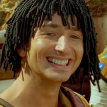
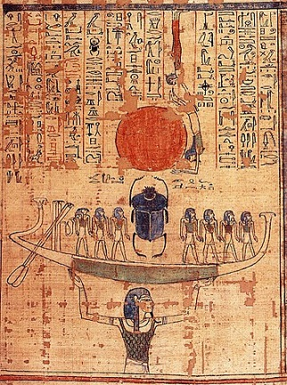

Początek świata
Podczas gdy w teologii chrześcijańskiej istnieje tylko jedna opowieść o stworzeniu, w starożytnym Egipcie było ich cztery, a każda wiązała się z jednym z wielkich miast - Heliopolis, Memfis, Hermopolis i Esną - jak i jednym z wielkich bogów. Byli to,
zgodnie z porządkiem powyższych miast, Atum (później utożsamiony z Re), Ptah, Tot i Chnum.
Heliopolis
W Heliopolis, Mieście Słońca, Atum przebywał sam na błotnistym brzegu, który wyłonił się z kryjących świat pierwotnych Wód Nun (niczym z wód Nilu). Gdy pojąl że do pomocy w stwarzaniu potrzebuje innych bogów, masturbował się, a z jego nasienia powstało
dwoje bogów: Szu, bóg nieba, i Tefnut, jego siostra, bogini wilgoci. Ich dziećmi byli Geb, bóg ziemi oraz Nut, bogini nieba. Geb i Nut mieli pięcioro dzieci: Ozyrysa, Izydę, Horusa Starszego, Seta i Neftydę - narodzonych w 5 kolejnych
dniach spoza tradycyjnego 360-dniowego kalendarza. Stało się tak za sprawą proroctwa: dzieci Nut miały pokonać Atuma-Re, zatem Nut została przeklęta: nie mogła rodzić dzieci w żadnym z dni roku. Księżyc oddawał swe światło, aż starczyło
go na 5 dodatkowych dni.
Memfis
W Memfis, świeckiej stolicy Egiptu od I Dynastii, ok. 3100 r. p.n.e., głównym bóstwem był bóg-stwórca, Ptah. Wedle legendy poprzedzał on Atuma, gdyż to on stworzył jego serce i język. Ptaha czczono zwłaszcza jako boga rzemieślników i robotników, a zwano
między innymi "ojcem i matką wszystkich bogów".
Hermopolis
Trzecia legenda o stworzeniu pochodziła z Hermopolis, ośrodka kultu boga Tota. Często przedstawiano go z głową ibisa, zwierzęciem zaś szczególnie czczonym i z nim związanym był pawian. Tot był bogiem mądrości i nauki, tym, który wynalazł hieroglify, dosłownie
"święte pisma". Patronował przede wszystkim skrybom, a wiązano go również z Księżycem. Tamtejszy wariant mitu o stworzeniu mówi, że to właśnie w Hermopolis, a nie w Heliopolis, z Wód Nun wyłonił się pierwszy pagórek. Z jaja leżącego
na pagórku wykluł się bóg Słońca, a według innej wersji wyrósł tam kwiat lotosu, którego platki otwarły się, ukazując młodego boga stworzenia, Nefertuma.

Esna
W Esna świątynie poświęcone były Chnumowi, bogowi o głowie barana. Wierzono, że lepił on ludzi na swym kole garncarskim, "w dwóch egzemplarzach", każdy bowiem miał sobowtóra ka. Był to duch, który pozostawał blisko grobu zmarłego,
podczas gdy jego dusza ba, w postaci ptaka o ludzkiej głowie, w chwili śmierci odfruwała do następnego świata. Najpełniejsza wersja stworzenia świata zapisana jest na ścianach świątyni w Esna i mówi o bogini imieniem Neith,
związanej z miastem Sais w Delcie, która przyszła na świat jeszcze przed pierwotnym pagórkiem, wynurzając się z Wód Nun, by stworzyć świat.
Dla współczesnej umysłowości religijnej istnienie czterech wersji historii stworzenia byłoby trudne do przyjęcia, jednak starożytni Egipcjanie nie widzieli w tym żadnej sprzeczności. Każda z legend o stworzeniu była w swym mieście macierzystym najbardziej popularna, choćogólnie pierwszeństwo miała wersja z Heliopolis, gdyż wiązała się ze Słońcem i najważniejszym z bogów, Re, którego potem połączono z Amonem z Teb. Tak powstał wielki bóg Amon-Re.
